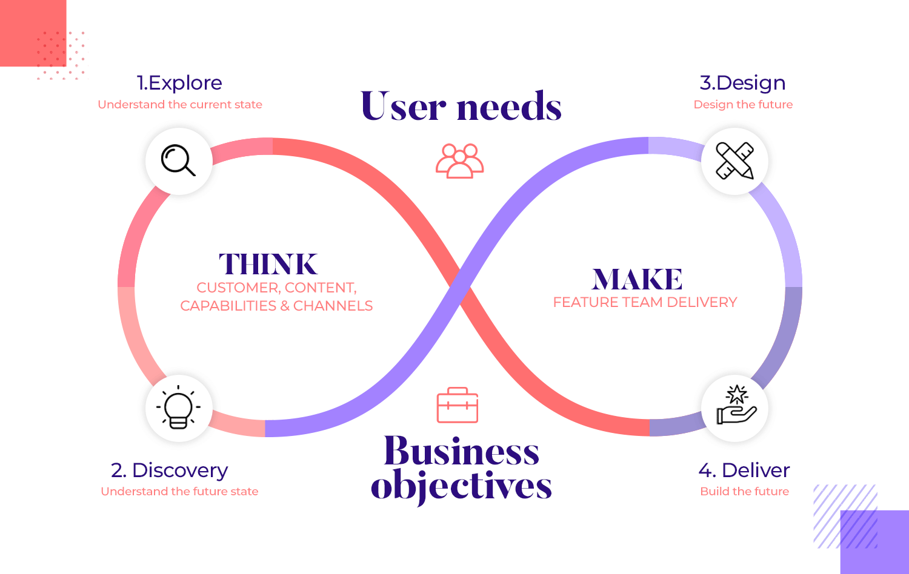
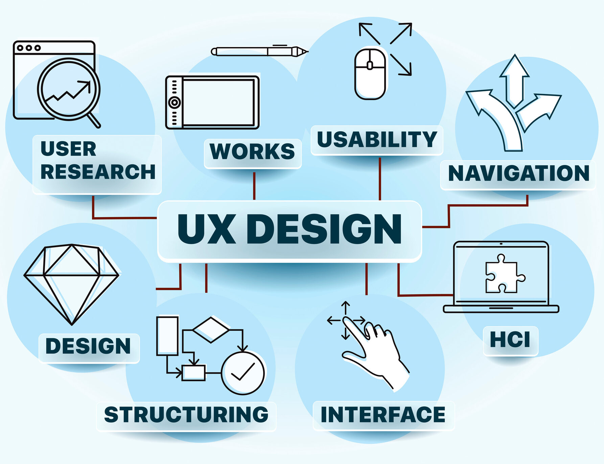
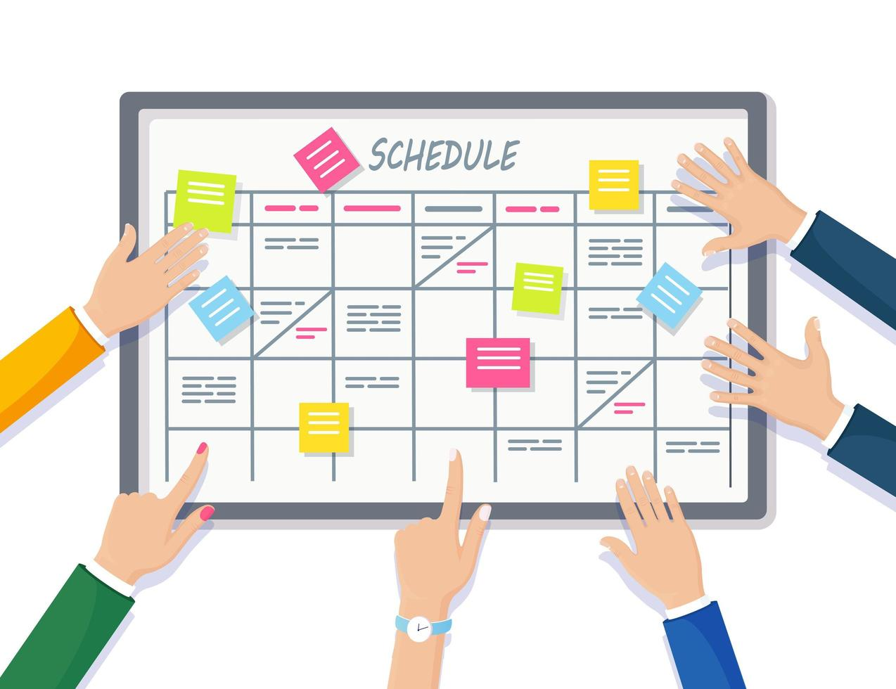

Ervaring uit vakken
Tijdens mijn eerste jaar CMD heb ik gemerkt welke vakken me het meeste aanspreken en waar ik ook goed mijn ei in kwijt kan. Dit zijn vakken waarin ik zowel creatief als technisch aan de slag kan gaan — precies wat ik leuk vind aan CMD. Hier haal ik veel energie uit en ik zie ook dat ik er goed in begin te worden:
- HTML, CSS & JavaScript – Frontend development vind ik superinteressant. Ik hou van de combinatie tussen design en techniek en vind het tof als iets écht werkt zoals ik het bedacht heb. 
- UCD (User-Centered Design) – Ik vind het belangrijk om vanuit de gebruiker te denken. UCD leert me hoe ik met de juiste vragen en methodes tot betere ontwerpen kom. 
- UX & HCI (Human-Computer Interaction) – Deze vakken gaan dieper in op het gebruiksgemak en interactie tussen mens en technologie. Ze helpen me om bewuster keuzes te maken in design en interactie. 
- Testplannen maken – Het gestructureerd testen van een product vind ik verrassend leuk. Ik leer er veel van over hoe een gebruiker écht omgaat met een ontwerp.
- Teamwork & Projectmanagement – Samenwerken aan grotere projecten geeft me energie. Ik leer hoe je in een team goede communicatie en planning toepast om tot een sterk eindresultaat te komen.